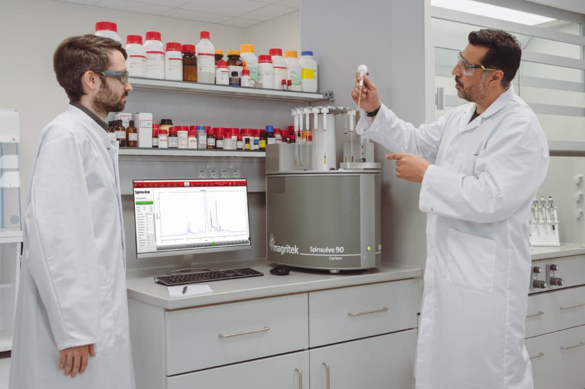
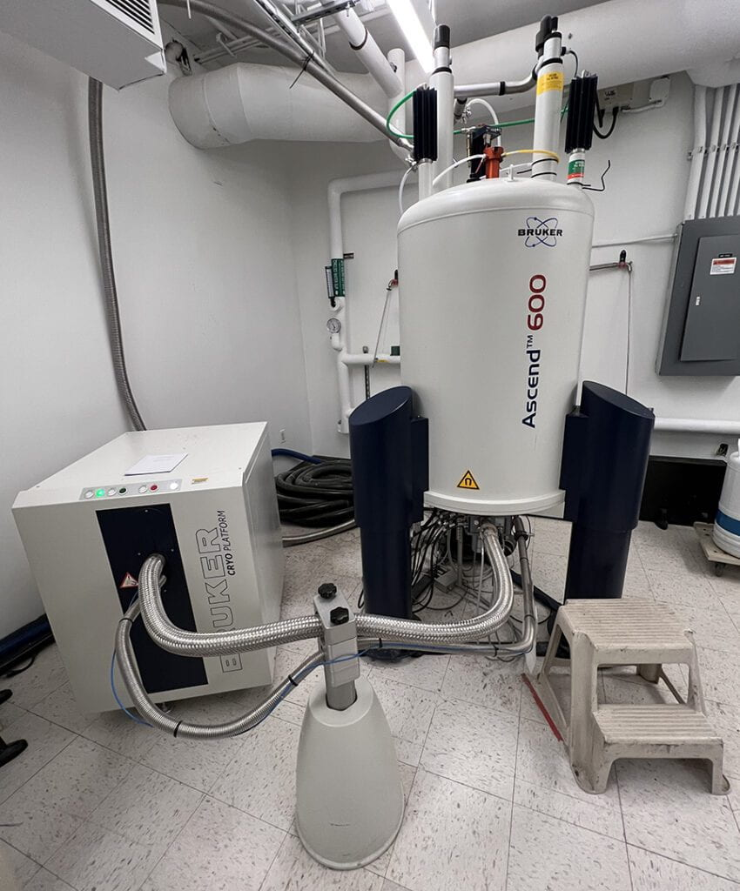

Extracting field-independent spin-system parameters from low-field ¹H NMR spectra.
Second-order benchtop spectra (90 MHz) fully encode chemical shifts and scalar couplings — we train a neural network to invert the field-dependent Hamiltonian and recover those parameters directly.
Lucas Abounader · Sam Mansfield · Yiming Zhang · Scripps Hackathon 2026


At 90 MHz, peaks overlap and intensities become nonlinear: the spectrum looks unreadable. But the same chemical shifts and coupling constants that define the molecule are still encoded in the lineshape. Drag the field to watch them resolve.
Restricting to molecules with exactly 8 chemically distinct spin groups fixes the output dimensionality, eliminating graph-size variability. Training data were generated through a three-stage computational pipeline:
enumerate 8-spin-group systems from structural databases
substructure-based δ and J assignment from reference tables
exact ¹H spectra via spin Hamiltonian diagonalization
Training requires only that spin systems are chemically and physically plausible. The model learns the inverse Hamiltonian map from the distribution of realistic parameters.
| Substructure | δ (ppm) | ³J (Hz) |
|---|---|---|
| –CH₃ | 0.8–1.0 | — |
| –OCH₂– | 3.4–4.5 | 6.5–7.5 |
| Ar–H | 6.5–8.5 | 8.0–9.0 |
| A | B | C | … | n | |
|---|---|---|---|---|---|
| A | δA | JAB | JAC | … | nA |
| B | JAB | δB | JBC | … | nB |
| C | JAC | JBC | δC | … | nC |
| … | ⋱ | ||||
convolutional stem → ppm-indexed feature tokens
global attention across the spectrum links resonances from coupled spin groups
one query per spin group cross-attends spectral tokens (DETR-style set prediction)
δ and multiplicity per node; symmetric J and coupling presence per pair
Each spin-group query learns to attend the spectral regions corresponding to its multiplet; a symmetric edge head predicts all 28 couplings jointly, encoding the unordered graph structure by construction. (Support-region tokenization was evaluated but yielded no improvement over global attention.)
| E | F | n | |
|---|---|---|---|
| E | 3.59 | 7.2 | 2 |
| F | 7.2 | 3.61 | 2 |
Low-field NMR isn't low-information — the structure is all there, just scrambled. Spinhance unscrambles it.